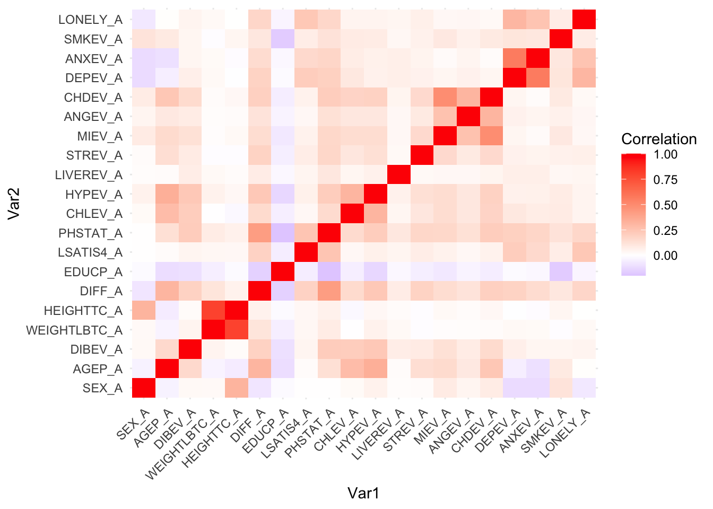
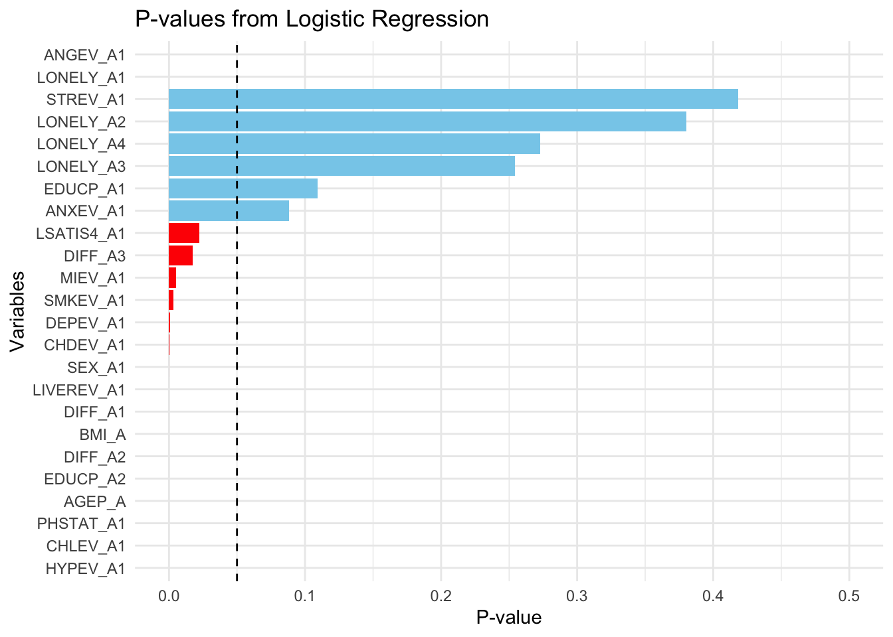
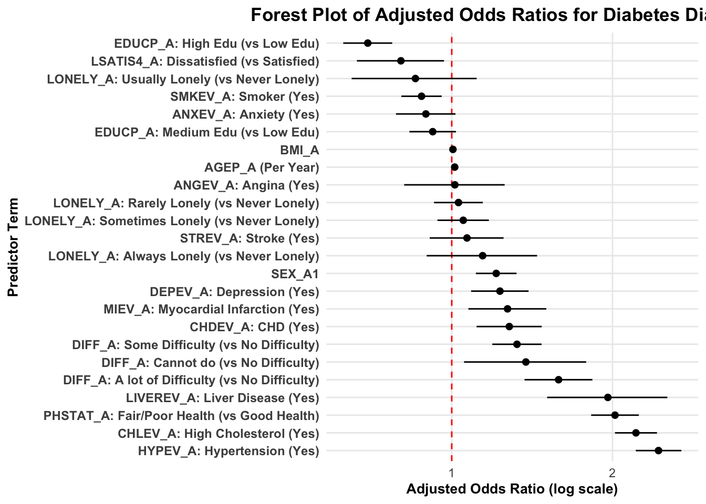
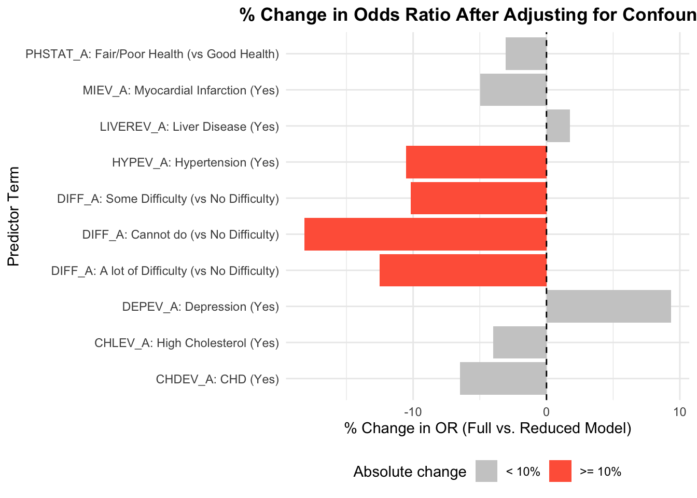
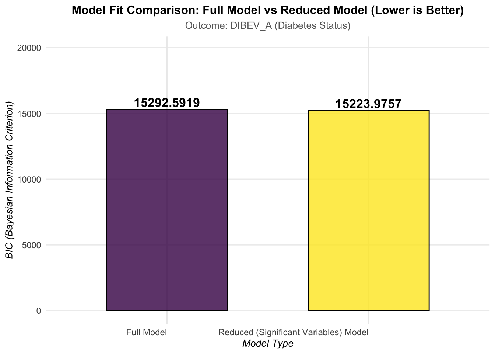

source(here("data", "datacleaning.R"))In the 1970s, the World Health Organization (WHO) introduced the term Non-Insulin Dependent Diabetes Mellitus (NIDDM) to differentiate forms of diabetes based on therapeutic requirements and underlying physiological mechanisms. This classification distinguished insulin-dependent diabetes (now known as Type 1) from cases typically managed without insulin. As scientific understanding evolved, it became clear that NIDDM was characterized primarily by insulin resistance and impaired β-cell function. Consequently, in the 1990s the terminology shifted to Type 2 Diabetes (T2D), reflecting its biological rather than treatment-based foundations [1]. Today, T2D accounts for over 90% of diabetes cases globally, and its prevalence is projected to increase from 460 million in 2017 to 693 million by 2045 [2]. The global burden is particularly severe in low- and middle-income countries [1], and disparities exist even within nations: Saeedi et al. [4] estimate a rise in global diabetes prevalence from 9.3% in 2019 to 10.9% by 2045, with substantial urban–rural differences. While the genetic basis of T2D is well-documented [3], emerging evidence suggests that modifiable postnatal exposures, including education, may play a direct role in shaping T2D risk independent of BMI [5].
Despite extensive research, major knowledge gaps remain in understanding how behavioral, psychosocial, socioeconomic, and chronic disease–related factors interact to influence T2D development. Although Yu et al. [16] identify diet and pollution as potential contributors—possibly through epigenetic mechanisms—these biological pathways remain insufficiently understood. Likewise, findings from the EPIC-InterAct study indicate a 67% higher T2D risk among individuals with lower educational attainment even after adjusting for lifestyle and metabolic factors [17], yet the mechanisms beyond behavioral explanation remain unclear. Existing literature also tends to overemphasize prenatal and genetic determinants [2,11], while underexploring critical postnatal influences such as mental health, daily behavior, socioeconomic context, and environmental exposures. Additionally, mobility-related behaviors such as travel remain poorly understood, with inconsistent evidence regarding their contribution to metabolic health. Persistent geographic and socioeconomic disparities further demonstrate that generalized prevention strategies are inadequate for addressing the heterogeneity of T2D burden [18].
Given the complex and multilayered determinants of T2D, there is a pressing need for integrative research that simultaneously examines lifestyle behaviors, mental health, socioeconomic circumstances, and chronic comorbidities. Existing studies rarely analyze how these determinants interact rather than operate independently, leaving critical questions about their combined effects unanswered. With growing evidence that modifiable exposures can meaningfully alter T2D risk—even among genetically predisposed individuals—there is strong motivation to develop more nuanced, context-sensitive prevention strategies. This study aims to address these gaps by investigating the joint and interactive contributions of behavioral, psychosocial, and socioeconomic factors to T2D susceptibility, ultimately contributing toward more precise, equitable, and evidence-based public health interventions.
Our study began by trying to answer: - How do modifiable behavioral, psychosocial, socioeconomic, and medical factors interact to shape Type 2 Diabetes (T2D) risk in U.S. adults?
To further break it down, we aimed to investigate: - How do behavioral factors (smoking, physical inactivity, mobility limitations) contribute to T2D risk?
How do psychosocial factors (depression, mental health, stress) influence T2D susceptibility?
How does socioeconomic status (particularly education) influence T2D susceptibility?
How do cardiometabolic comorbidities (hypertension, high cholesterol, liver disease, coronary heart disease) influence T2D susceptibility?
As the project developed, the question also evolved in the process. We shifted from examing individual risk factors in isolation to understanding how they “collectively contribute” and “jointly shape” diabetes susceptibility through interactions. There are also new questions considered during the course of analysis. As we find variables with high correlation, how do we deal with them in the model?
We use data from the 2024 National Health Interview Survey (NHIS), a nationally representative, cross-sectional survey of the civilian noninstitutionalized U.S. population conducted by the National Center for Health Statistics (NCHS). T2D status, anxiety, depression, smoking, and relevant demographic and clinical covariates are derived from the publicly available NHIS sample adult-level files. We use the NHIS 2024 Adult Sample, which includes demographic variables, chronic disease history, mental health indicators, lifestyle factors, and functional limitations.
Data are directly accessible through CDC database.
The data-cleaning process began with importing the 2024 National Health Interview Survey (NHIS) adult dataset from an Excel file. Given that the raw dataset contained over 600 variables, the first step involved systematically reducing dimensionality. Guided by prior literature and the study’s conceptual framework, variables unrelated to diabetes risk were removed, along with variables that exhibited substantial missingness or lacked analytical relevance.
After this initial screening, we identified and retained a subset of variables broadly supported by existing epidemiological research as potential determinants of Type 2 Diabetes. These variables—which included demographic factors, lifestyle behaviors, psychosocial indicators, and comorbid health conditions—were extracted to form a refined dataset that served as the foundation for subsequent analysis.
Following variable selection, we performed targeted recoding and cleaning steps, such as standardizing categorical responses, addressing missing or invalid values, and ensuring consistency across health and demographic variables. This curated dataset constitutes the final analytic cohort used for exploratory analysis and multivariable modeling.
These selected variables were then compiled into a new, streamlined analytic dataset that served as the foundation for all subsequent analyses： - Sex is converted to binary coding (1 for male, 0 for female).
The primary outcome variable, diabetes status (DIBEV_A), is recoded from categorical responses to binary format (1 for yes, 0 for no), with all undefined responses removed.
Walking difficulty (DIFF_A) is transformed into an ordinal scale ranging from 0 to 3, representing increasing levels of difficulty.
Education level (EDUCP_A) is collapsed into three broader categories: less than high school (0), high school or some college (1), and college degree or higher (2).
Life satisfaction and health status variables are dichotomized into two meaningful groups each.
Multiple chronic disease indicators, including high cholesterol, hypertension, liver disease, stroke, myocardial infarction, angina, and coronary heart disease, are recoded to binary variables (1 for ever diagnosed, 0 for never diagnosed).
The loneliness scale is reverse-coded to create an intuitive ordering where higher values indicate greater loneliness (0-4 scale).
Smoking history, depression, and anxiety variables are converted to binary indicators.
Throughout the process, observations with “refused,” “don’t know,” or “not ascertained” responses (typically coded as 7, 8, or 9) are systematically filtered out to ensure data quality. Finally, the cleaned dataset is subset to include only the 20 relevant variables needed for subsequent analysis: sex, age, diabetes status, weight, height, walking difficulty, education, life satisfaction, health status, the seven chronic disease indicators, depression, anxiety, smoking history, and loneliness.
This analysis investigates factors associated with the likelihood of diabetes diagnosis using data from the 2024 National Health Interview Survey (NHIS), a nationally representative sample of adults. Our outcome variable, DIBEV_A, is a binary indicator representing whether an individual has been diagnosed with diabetes (0 = No diabetes, 1 = Diabetes diagnosis). We employed a multivariable logistic regression approach to examine the independent associations between diabetes and a comprehensive set of demographic, lifestyle, physical health, and chronic disease indicators.
To model the association between multiple predictors and the binary diabetes outcome, we employed a generalized linear model (GLM) with a binomial distribution and logit link. Logistic regression is appropriate when modeling the probability of an event, ensuring that predicted values remain within the interval \([0,1]\).
The logistic regression model can be written as:
\[ \text{logit}\big(P(Y=1 \mid X)\big) = \log \left( \frac{P(Y=1 \mid X)}{1 - P(Y=1 \mid X)} \right) = \beta_0 + \sum_{j=1}^{p} \beta_j X_j , \]
where \(Y\) is the binary outcome and \(X_j\) denotes the \(j\)-th predictor.
The fitted model in R takes the following form:
glm(
DIBEV_A ~ SEX_A + AGEP_A + BMI_A +
DIFF_A + EDUCP_A + PHSTAT_A + CHLEV_A +
HYPEV_A + LIVEREV_A + MIEV_A + CHDEV_A + DEPEV_A,
data = df_model,
family = binomial(link = "logit")
)##
## Call: glm(formula = DIBEV_A ~ SEX_A + AGEP_A + BMI_A + DIFF_A + EDUCP_A +
## PHSTAT_A + CHLEV_A + HYPEV_A + LIVEREV_A + MIEV_A + CHDEV_A +
## DEPEV_A, family = binomial(link = "logit"), data = df_model)
##
## Coefficients:
## (Intercept) SEX_A1 AGEP_A BMI_A DIFF_A1 DIFF_A2
## -4.247461 0.173317 0.013126 0.005248 0.276998 0.440600
## DIFF_A3 EDUCP_A1 EDUCP_A2 PHSTAT_A1 CHLEV_A1 HYPEV_A1
## 0.301274 -0.083189 -0.340347 0.677723 0.788500 0.889397
## LIVEREV_A1 MIEV_A1 CHDEV_A1 DEPEV_A1
## 0.660001 0.234057 0.250343 0.125960
##
## Degrees of Freedom: 24037 Total (i.e. Null); 24022 Residual
## (1 observation deleted due to missingness)
## Null Deviance: 17650
## Residual Deviance: 15060 AIC: 15090To better understand the relationships between the variables in our dataset, we find the need to conduct a correlation analysis. The original dataset was obtained from the 2024 NHIS (National Health Interview Survey), which contains information on demographic characteristics, health conditions, and behavioral factors for a nationally representative sample of adults. The cleaned dataset included variables such as age, sex, weight, height, and various health indicators.
Correlation analysis serves as a preliminary step to identify variables that are linearly associated. Understanding these relationships helps us: - Detect potential multicollinearity before performing regression analyses or more complex modeling. - Provide evidence-based justification for including or excluding certain variables in our following statistical models.
We computed pairwise Pearson correlations for all numeric variables. Correlations with an absolute value greater than 0.3 are considered moderate or strong associations. Additionally, diagonal elements (self-correlations) were excluded from interpretation, and symmetric duplicates were removed to ensure clarity.
To understand Coefficient of determination (\(R^2\)), \(R^2\) represents the proportion of the variance in one variable that is predictable from the other variable. For our selected threshold of \(r = 0.3\): \[R^2 = (0.3)^2 = 0.09\] This means that for two variables correlated at \(r = 0.3\), 9% of the variation in one variable is explained by the other variable.
nhis24_df_fit_corr = nhis24_df_fit |>
select(-BMI_A)
numeric_vars <- nhis24_df_fit_corr[, sapply(nhis24_df_fit_corr, is.numeric)]
cor_matrix <- cor(numeric_vars, use = "pairwise.complete.obs")
cor_pt = as.data.frame(as.table(cor_matrix)) |>
ggplot(aes(Var1, Var2, fill = Freq)) +
geom_tile() +
scale_fill_gradient2(
low = "blue", mid = "white", high = "red",
midpoint = 0,
name = "Correlation"
) +
theme_minimal() +
theme(
axis.text.x = element_text(angle = 45, hjust = 1)
)
cor_pt
Key Findings: From our analysis, the following moderate-to-strong correlations were observed:
# > 0.03 in cor_matrix
# Convert correlation matrix to a data frame
cor_df <- as.data.frame(as.table(cor_matrix))
# Rename columns
colnames(cor_df) <- c("Var1", "Var2", "Correlation")
# Filter |correlation| > 0.3 but exclude self-correlations
high_cor <- cor_df |>
filter(abs(Correlation) > 0.3 & Var1 != Var2)
# remove duplicate
high_cor_unique <- high_cor |>
rowwise() |>
mutate(pair = paste(sort(c(Var1, Var2)), collapse = "_")) |>
distinct(pair, .keep_all = TRUE) |>
select(-pair) |>
arrange(desc(Correlation))
knitr::kable(high_cor_unique, caption = "Variables with Correlation > 0.3")| Var1 | Var2 | Correlation |
|---|---|---|
| HEIGHTTC_A | WEIGHTLBTC_A | 0.7990500 |
| ANXEV_A | DEPEV_A | 0.5655414 |
| CHDEV_A | MIEV_A | 0.4894397 |
| PHSTAT_A | DIFF_A | 0.4207704 |
| HYPEV_A | AGEP_A | 0.3409029 |
| HEIGHTTC_A | SEX_A | 0.3166907 |
| DIFF_A | AGEP_A | 0.3147700 |
| HYPEV_A | CHLEV_A | 0.3139274 |
| CHDEV_A | ANGEV_A | 0.3124477 |
| LONELY_A | DEPEV_A | 0.3055309 |
The strong correlation between height and weight (r = 0.799) raised significant concerns about multicollinearity in subsequent regression modeling. Multicollinearity can inflate standard errors, destabilize coefficient estimates, and reduce the reliability of statistical inference. Rather than including both highly correlated variables separately, we adopted a strategic solution: we excluded height and weight from the model and instead created a continuous BMI variable using the standard formula (weight in kilograms divided by height in meters squared).
As highlighted in the correlation analysis above, height and weight exhibited a strong linear association, an observation that raised concerns about potential multicollinearity in subsequent regression modeling. Multicollinearity can distort coefficient estimates and reduce model reliability, so we opted to exclude these two highly correlated variables from the model. In their place, we introduced a continuous BMI variable using the raw height and weight data. This replacement strategy offers dual advantages: it eliminates the multicollinearity risk posed by height and weight while integrating their combined biological information into a single, interpretable metric, thereby adequately addressing confounding from these two factors.
Below is the specification of the initial full logistic regression model (prior to further variable selection):
\[ \text{Logit}(P(\text{DIBEV_A}=1)) = \log\left(\frac{P(\text{DIBEV_A}=1)}{1-P(\text{DIBEV_A}=1)}\right) = \beta_0 \\ + \beta_1 \cdot \text{SEX_A} + \beta_2 \cdot \text{AGEP_A} + \beta_3 \cdot \text{BMI_A} + \beta_4 \cdot \text{DIFF_A} + \beta_5 \cdot \text{EDUCP_A} \\ + \beta_6 \cdot \text{LSATIS4_A} + \beta_7 \cdot \text{PHSTAT_A} + \beta_8 \cdot \text{CHLEV_A} + \beta_9 \cdot \text{HYPEV_A} + \beta_{10} \cdot \text{LIVEREV_A} \\ + \beta_{11} \cdot \text{STREV_A} + \beta_{12} \cdot \text{MIEV_A} + \beta_{13} \cdot \text{ANGEV_A} + \beta_{14} \cdot \text{CHDEV_A} + \beta_{15} \cdot \text{DEPEV_A} \\ + \beta_{16} \cdot \text{ANXEV_A} + \beta_{17} \cdot \text{SMKEV_A} + \beta_{18} \cdot \text{LONELY_A} \]
df_model =
nhis24_df_fit |>
mutate(
# Outcome: DIBEV_A
DIBEV_A = factor(DIBEV_A, levels = c(0, 1)),
# Covariates - Dichotomous/Ordinal/Categorical (MUST be factor)
SEX_A = factor(SEX_A), # Assume 1/2 coding is acceptable
DIFF_A = factor(DIFF_A), # Codes 0, 1, 2, 3
EDUCP_A = factor(EDUCP_A), # Codes 0, 1, 2
LSATIS4_A = factor(LSATIS4_A), # Codes 0, 1
PHSTAT_A = factor(PHSTAT_A), # Codes 0, 1
CHLEV_A = factor(CHLEV_A), # Codes 0, 1
HYPEV_A = factor(HYPEV_A), # Codes 0, 1
LIVEREV_A = factor(LIVEREV_A), # Codes 0, 1
STREV_A = factor(STREV_A), # Codes 0, 1
MIEV_A = factor(MIEV_A), # Codes 0, 1
ANGEV_A = factor(ANGEV_A), # Codes 0, 1
CHDEV_A = factor(CHDEV_A), # Codes 0, 1
DEPEV_A = factor(DEPEV_A), # Codes 0, 1
ANXEV_A = factor(ANXEV_A), # Codes 0, 1
SMKEV_A = factor(SMKEV_A), # Codes 0, 1
LONELY_A = factor(LONELY_A) # Codes 0, 1, 2, 3, 4
) model_formula <- DIBEV_A ~ SEX_A + AGEP_A + BMI_A +
DIFF_A + EDUCP_A + LSATIS4_A + PHSTAT_A + CHLEV_A +
HYPEV_A + LIVEREV_A + STREV_A + MIEV_A + ANGEV_A +
CHDEV_A + DEPEV_A + ANXEV_A + SMKEV_A + LONELY_A
glm_model <- glm(
model_formula,
data = df_model,
family = binomial(link = "logit")
)
summary(glm_model)##
## Call:
## glm(formula = model_formula, family = binomial(link = "logit"),
## data = df_model)
##
## Coefficients:
## Estimate Std. Error z value Pr(>|z|)
## (Intercept) -4.1895201 0.1324915 -31.621 < 2e-16 ***
## SEX_A1 0.1917239 0.0447689 4.283 1.85e-05 ***
## AGEP_A 0.0127530 0.0018254 6.986 2.82e-12 ***
## BMI_A 0.0051571 0.0009111 5.660 1.51e-08 ***
## DIFF_A1 0.2813773 0.0541776 5.194 2.06e-07 ***
## DIFF_A2 0.4606117 0.0746588 6.170 6.85e-10 ***
## DIFF_A3 0.3195845 0.1342044 2.381 0.017250 *
## EDUCP_A1 -0.0820763 0.0512390 -1.602 0.109192
## EDUCP_A2 -0.3620747 0.0538520 -6.724 1.77e-11 ***
## LSATIS4_A1 -0.2192076 0.0957873 -2.288 0.022109 *
## PHSTAT_A1 0.7040253 0.0524410 13.425 < 2e-16 ***
## CHLEV_A1 0.7941920 0.0461775 17.199 < 2e-16 ***
## HYPEV_A1 0.8915097 0.0501692 17.770 < 2e-16 ***
## LIVEREV_A1 0.6731281 0.1321408 5.094 3.51e-07 ***
## STREV_A1 0.0656714 0.0811430 0.809 0.418326
## MIEV_A1 0.2404945 0.0857083 2.806 0.005017 **
## ANGEV_A1 0.0134857 0.1104776 0.122 0.902845
## CHDEV_A1 0.2481630 0.0716484 3.464 0.000533 ***
## DEPEV_A1 0.2078103 0.0632244 3.287 0.001013 **
## ANXEV_A1 -0.1115474 0.0654402 -1.705 0.088275 .
## SMKEV_A1 -0.1302758 0.0444140 -2.933 0.003355 **
## LONELY_A1 0.0290775 0.0536861 0.542 0.588080
## LONELY_A2 0.0496030 0.0565279 0.877 0.380217
## LONELY_A3 -0.1566127 0.1373237 -1.140 0.254093
## LONELY_A4 0.1331396 0.1214082 1.097 0.272804
## ---
## Signif. codes: 0 '***' 0.001 '**' 0.01 '*' 0.05 '.' 0.1 ' ' 1
##
## (Dispersion parameter for binomial family taken to be 1)
##
## Null deviance: 17654 on 24037 degrees of freedom
## Residual deviance: 15040 on 24013 degrees of freedom
## (1 observation deleted due to missingness)
## AIC: 15090
##
## Number of Fisher Scoring iterations: 5glm_summary = summary(glm_model)
p_values_df = data.frame(
Variable = rownames(glm_summary$coefficients),
P_value = glm_summary$coefficients[, "Pr(>|z|)"]
)
# Remove intercept
p_values_df =
p_values_df[p_values_df$Variable != "(Intercept)", ]
P_value_hisg =
p_values_df|>
ggplot(aes(x = reorder(Variable, P_value), y = P_value)) +
geom_bar(
stat = "identity",
fill = ifelse(p_values_df$P_value < 0.05, "red", "skyblue")
) +
geom_hline(yintercept = 0.05, linetype = "dashed", color = "black") +
coord_flip() +
scale_y_continuous(limits = c(0, 0.5)) +
labs(
title = "P-values from Logistic Regression",
x = "Variables",
y = "P-value"
) +
theme_minimal()
P_value_hisg## Warning: Removed 2 rows containing missing values or values outside the scale range
## (`geom_bar()`).
Tidy results.
tidy_logit <- function(model) {
broom::tidy(model, conf.int = TRUE) |>
mutate(
Beta = estimate,
OR = exp(estimate),
Lower_CI = exp(conf.low),
Upper_CI = exp(conf.high),
p.value = format.pval(p.value, digits = 3, eps = 0.001)
) |>
select(term, Beta, OR, Lower_CI, Upper_CI, p.value)
}Clean up term names for presentation.
clean_term_labels <- function(df) {
df |>
mutate(
term = gsub("`", "", term),
Term = case_when(
term == "(Intercept)" ~ "Intercept",
term == "SEX_A2" ~ "SEX_A: Female (vs Male)",
# Difficulty Walking (0: No Difficulty)
term == "DIFF_A1" ~ "DIFF_A: Some Difficulty (vs No Difficulty)",
term == "DIFF_A2" ~ "DIFF_A: A lot of Difficulty (vs No Difficulty)",
term == "DIFF_A3" ~ "DIFF_A: Cannot do (vs No Difficulty)",
# Education (0: Low Education)
term == "EDUCP_A1" ~ "EDUCP_A: Medium Edu (vs Low Edu)",
term == "EDUCP_A2" ~ "EDUCP_A: High Edu (vs Low Edu)",
# Life Satisfaction (0: Satisfied/Very Satisfied)
term == "LSATIS4_A1" ~ "LSATIS4_A: Dissatisfied (vs Satisfied)",
# Health Status (0: Good/VGood/Excellent Health)
term == "PHSTAT_A1" ~ "PHSTAT_A: Fair/Poor Health (vs Good Health)",
# Loneliness (0: Never Lonely)
term == "LONELY_A1" ~ "LONELY_A: Rarely Lonely (vs Never Lonely)",
term == "LONELY_A2" ~ "LONELY_A: Sometimes Lonely (vs Never Lonely)",
term == "LONELY_A3" ~ "LONELY_A: Usually Lonely (vs Never Lonely)",
term == "LONELY_A4" ~ "LONELY_A: Always Lonely (vs Never Lonely)",
# Chronic Dichotomous Conditions (1: Yes vs 0: No)
term == "CHLEV_A1" ~ "CHLEV_A: High Cholesterol (Yes)",
term == "HYPEV_A1" ~ "HYPEV_A: Hypertension (Yes)",
term == "LIVEREV_A1" ~ "LIVEREV_A: Liver Disease (Yes)",
term == "STREV_A1" ~ "STREV_A: Stroke (Yes)",
term == "MIEV_A1" ~ "MIEV_A: Myocardial Infarction (Yes)",
term == "ANGEV_A1" ~ "ANGEV_A: Angina (Yes)",
term == "CHDEV_A1" ~ "CHDEV_A: CHD (Yes)",
term == "DEPEV_A1" ~ "DEPEV_A: Depression (Yes)",
term == "ANXEV_A1" ~ "ANXEV_A: Anxiety (Yes)",
term == "SMKEV_A1" ~ "SMKEV_A: Smoker (Yes)",
# Continuous Variables
term == "AGEP_A" ~ "AGEP_A (Per Year)",
term == "WEIGHTLBTC_A" ~ "WEIGHTLBTC_A (Per lb)",
term == "HEIGHTTC_A" ~ "HEIGHTTC_A (Per unit)",
TRUE ~ term
)
) |>
select(Term, Beta, OR, Lower_CI, Upper_CI, p.value)
}Generate kable table.
format_logit_table <- function(df,
caption,
footnote_text = "Reference Outcome: No Diabetes (DIBEV_A = 0).") {
df |>
dplyr::mutate(
OR_CI = paste0(
round(OR, 3), " (",
round(Lower_CI, 3), " - ",
round(Upper_CI, 3), ")"
),
Beta = round(Beta, 4)
) |>
dplyr::select(Term, Beta, OR_CI, p.value) |>
knitr::kable(
caption = caption,
col.names = c("Predictor Term", "Coefficient (Beta)", "Adjusted OR (95% CI)", "P-value"),
align = c("l", "r", "r", "r"),
booktabs = TRUE
) |>
kableExtra::kable_styling(
full_width = TRUE,
position = "left",
latex_options = "hold_position"
) |>
kableExtra::add_header_above(c(" " = 2, "Odds Ratio" = 1, " " = 1)) |>
kableExtra::footnote(
general = footnote_text,
threeparttable = TRUE
)
}model_results_tidy =
glm_model |>
tidy_logit() |>
clean_term_labels()
model_results_tidy |>
format_logit_table(
caption = "Multivariable Logistic Regression of Diabetes Diagnosis (Adjusted Odds Ratios)"
)| Predictor Term | Coefficient (Beta) | Adjusted OR (95% CI) | P-value |
|---|---|---|---|
| Intercept | -4.1895 | 0.015 (0.012 - 0.02) | < 0.001 |
| SEX_A1 | 0.1917 | 1.211 (1.11 - 1.322) | < 0.001 |
| AGEP_A (Per Year) | 0.0128 | 1.013 (1.009 - 1.016) | < 0.001 |
| BMI_A | 0.0052 | 1.005 (1.003 - 1.007) | < 0.001 |
| DIFF_A: Some Difficulty (vs No Difficulty) | 0.2814 | 1.325 (1.191 - 1.473) | < 0.001 |
| DIFF_A: A lot of Difficulty (vs No Difficulty) | 0.4606 | 1.585 (1.368 - 1.834) | < 0.001 |
| DIFF_A: Cannot do (vs No Difficulty) | 0.3196 | 1.377 (1.054 - 1.785) | 0.01725 |
| EDUCP_A: Medium Edu (vs Low Edu) | -0.0821 | 0.921 (0.833 - 1.018) | 0.10919 |
| EDUCP_A: High Edu (vs Low Edu) | -0.3621 | 0.696 (0.626 - 0.774) | < 0.001 |
| LSATIS4_A: Dissatisfied (vs Satisfied) | -0.2192 | 0.803 (0.664 - 0.967) | 0.02211 |
| PHSTAT_A: Fair/Poor Health (vs Good Health) | 0.7040 | 2.022 (1.824 - 2.24) | < 0.001 |
| CHLEV_A: High Cholesterol (Yes) | 0.7942 | 2.213 (2.022 - 2.423) | < 0.001 |
| HYPEV_A: Hypertension (Yes) | 0.8915 | 2.439 (2.211 - 2.692) | < 0.001 |
| LIVEREV_A: Liver Disease (Yes) | 0.6731 | 1.96 (1.509 - 2.534) | < 0.001 |
| STREV_A: Stroke (Yes) | 0.0657 | 1.068 (0.91 - 1.25) | 0.41833 |
| MIEV_A: Myocardial Infarction (Yes) | 0.2405 | 1.272 (1.074 - 1.503) | 0.00502 |
| ANGEV_A: Angina (Yes) | 0.0135 | 1.014 (0.815 - 1.256) | 0.90285 |
| CHDEV_A: CHD (Yes) | 0.2482 | 1.282 (1.113 - 1.474) | < 0.001 |
| DEPEV_A: Depression (Yes) | 0.2078 | 1.231 (1.087 - 1.393) | 0.00101 |
| ANXEV_A: Anxiety (Yes) | -0.1115 | 0.894 (0.786 - 1.016) | 0.08827 |
| SMKEV_A: Smoker (Yes) | -0.1303 | 0.878 (0.805 - 0.958) | 0.00335 |
| LONELY_A: Rarely Lonely (vs Never Lonely) | 0.0291 | 1.03 (0.926 - 1.143) | 0.58808 |
| LONELY_A: Sometimes Lonely (vs Never Lonely) | 0.0496 | 1.051 (0.94 - 1.174) | 0.38022 |
| LONELY_A: Usually Lonely (vs Never Lonely) | -0.1566 | 0.855 (0.65 - 1.113) | 0.25409 |
| LONELY_A: Always Lonely (vs Never Lonely) | 0.1331 | 1.142 (0.897 - 1.445) | 0.27280 |
| Note: | |||
| Reference Outcome: No Diabetes (DIBEV_A = 0). |
First of all, we filter out terms that are very close to 1 with wide CIs and non-significant to reduce clutter. Secondly, we order the terms for better visualization, e.g., by OR value.
forest_data =
model_results_tidy |>
filter(Term != "Intercept") |>
mutate(Term = fct_reorder(Term, OR, .desc = TRUE))
forest_plots =
ggplot(forest_data, aes(x = OR, y = Term)) +
geom_vline(xintercept = 1, linetype = "dashed", color = "red") +
geom_pointrange(aes(xmin = Lower_CI, xmax = Upper_CI), size = 0.3) +
scale_x_log10(breaks = c(0.1, 0.2, 0.5, 1, 2, 5, 10),
labels = c("0.1", "0.2", "0.5", "1", "2", "5", "10")) +
labs(
title = "Forest Plot of Adjusted Odds Ratios for Diabetes Diagnosis",
x = "Adjusted Odds Ratio (log scale)",
y = "Predictor Term"
) +
theme_minimal() +
theme(
plot.title = element_text(hjust = 0.5, face = "bold"),
axis.text.y = element_text(size = 9, face = "bold"),
axis.title.x = element_text(size = 10, face = "bold"),
axis.title.y = element_text(size = 10, face = "bold"),
panel.grid.minor.x = element_blank() # Remove minor grid lines on x-axis
)
print(forest_plots)
This forest plot displays adjusted odds ratios (ORs) for diabetes diagnosis, where the y-axis lists predictors (with reference groups in parentheses), and the x-axis (log scale) shows ORs (dashed red line at OR=1, no association). Based on the plots, we used the 95% confidence interval (CI) exclusion of 1 as the measure of statistical significance, several variables demonstrated a significant independent association with a diabetes diagnosis. Predictors with OR < 1 and 95% CIs not crossing 1 (e.g., height, higher education, lower loneliness, smoking, anxiety) are linked to lower diabetes risk; those with OR > 1 and significant CIs (e.g., liver disease, fair/poor health, high cholesterol, hypertension) increase risk; and factors like stroke history, severe mobility difficulty, and some loneliness categories have CIs crossing 1, showing no significant association.
Below is the interpretation of the logistic regression output, with each variable summarized under its own subsection.
Males had significantly lower odds of diabetes compared with females after adjusting for all covariates.
Older age was a small but statistically significant risk factor for diabetes.
Smoking showed a borderline non-significant inverse
association.
There is no strong evidence of an association between smoking and
diabetes in this adjusted model.
Compared with the “Never Lonely” reference group:
None of the loneliness categories were statistically
significant.
Loneliness does not appear to be independently associated with diabetes
risk.
Higher education was protective.
Those with high education had markedly lower odds of diabetes.
Reference = No difficulty
Greater mobility limitations were associated with higher odds of diabetes.
Poor health was a strong predictor of diabetes.
A strong and significant association.
Hypertension was one of the largest predictors, more than doubling the odds of diabetes.
Individuals with liver disease had nearly double the odds of diabetes.
Not statistically significant.
History of myocardial infarction was positively associated with diabetes.
Almost No association.
CHD was a significant predictor of diabetes.
Depression was significantly associated with increased diabetes odds.
Anxiety was not significantly related to diabetes.
This comprehensive exploratory analysis identified multiple strong
and independent predictors of diabetes diagnosis using multivariable
logistic regression. The analysis proceeded systematically: we began
with correlation analysis to understand variable relationships and
identify multicollinearity concerns, addressed the height-weight
collinearity by creating a continuous BMI variable, and then estimated a
fully adjusted logistic regression model.
Our findings highlight the multifactorial nature of diabetes, involving
biological, behavioral, and socioeconomic determinants. The strongest
risk factors included hypertension, high cholesterol, liver disease,
fair/poor self-rated health, and mobility limitations, each more than
doubling or substantially increasing diabetes odds. BMI showed a clear
dose-response relationship, while depression emerged as a significant
psychosocial risk factor. Higher education demonstrated a robust
protective effect, likely operating through multiple pathways.
Notably, several variables showed no significant independent
associations after adjustment for other factors, including stroke
history, angina, anxiety, loneliness, and life satisfaction. The
paradoxical inverse association with smoking requires cautious
interpretation and further investigation.
To produce valid and interpretable estimates of diabetes risk
factors, we prespecified a set of core confounders that represent
fundamental upstream characteristics known to influence multiple health
domains.
We identified age, sex, BMI, and education as essential confounders
because these variables are:
1.Strongly associated with diabetes risk: Each
has well-established independent associations with diabetes prevalence
and incidence 2.Associated with our exposures of
interest: These background characteristics influence the
likelihood of developing conditions like hypertension, experiencing
functional limitations, and having comorbid chronic diseases
3.Upstream determinants: As broad demographic
and socioeconomic factors, they occur temporally prior to many of the
health conditions we examine, making them plausible common causes of
both exposures and outcomes.
By adjusting for these core confounders, we aim to isolate the
independent associations between specific health conditions (such as
hypertension, functional limitations, and depression) and diabetes
diagnosis, reducing bias and improving the interpretability of our
estimated associations.
model_formula_conf = DIBEV_A ~ SEX_A + AGEP_A + BMI_A +
DIFF_A + EDUCP_A + PHSTAT_A + CHLEV_A + HYPEV_A +
LIVEREV_A + MIEV_A + CHDEV_A + DEPEV_A
model_formula_noconf = DIBEV_A ~ DIFF_A + PHSTAT_A + CHLEV_A + HYPEV_A +
LIVEREV_A + MIEV_A + CHDEV_A + DEPEV_A
glm_model_noconf = glm(
model_formula_noconf,
data = df_model,
family = binomial(link = "logit")
)
glm_model_conf = glm(
model_formula_conf,
data = df_model,
family = binomial(link = "logit")
)
summary(glm_model_noconf)##
## Call:
## glm(formula = model_formula_noconf, family = binomial(link = "logit"),
## data = df_model)
##
## Coefficients:
## Estimate Std. Error z value Pr(>|z|)
## (Intercept) -3.42139 0.04617 -74.097 < 2e-16 ***
## DIFF_A1 0.38422 0.05209 7.376 1.63e-13 ***
## DIFF_A2 0.57433 0.07189 7.989 1.36e-15 ***
## DIFF_A3 0.50174 0.13107 3.828 0.000129 ***
## PHSTAT_A1 0.70896 0.05068 13.988 < 2e-16 ***
## CHLEV_A1 0.82945 0.04554 18.214 < 2e-16 ***
## HYPEV_A1 1.00054 0.04896 20.436 < 2e-16 ***
## LIVEREV_A1 0.64248 0.13167 4.880 1.06e-06 ***
## MIEV_A1 0.28495 0.08464 3.367 0.000761 ***
## CHDEV_A1 0.31726 0.06936 4.574 4.78e-06 ***
## DEPEV_A1 0.03665 0.05148 0.712 0.476527
## ---
## Signif. codes: 0 '***' 0.001 '**' 0.01 '*' 0.05 '.' 0.1 ' ' 1
##
## (Dispersion parameter for binomial family taken to be 1)
##
## Null deviance: 17654 on 24038 degrees of freedom
## Residual deviance: 15194 on 24028 degrees of freedom
## AIC: 15216
##
## Number of Fisher Scoring iterations: 5model_results_tidy_noconf =
glm_model_noconf |>
tidy_logit() |>
clean_term_labels()
model_results_tidy_noconf |>
format_logit_table(
caption = "Multivariable Logistic Regression of Diabetes Diagnosis (Adjusted Odds Ratios) Without Confounders"
)| Predictor Term | Coefficient (Beta) | Adjusted OR (95% CI) | P-value |
|---|---|---|---|
| Intercept | -3.4214 | 0.033 (0.03 - 0.036) | <0.001 |
| DIFF_A: Some Difficulty (vs No Difficulty) | 0.3842 | 1.468 (1.325 - 1.626) | <0.001 |
| DIFF_A: A lot of Difficulty (vs No Difficulty) | 0.5743 | 1.776 (1.542 - 2.043) | <0.001 |
| DIFF_A: Cannot do (vs No Difficulty) | 0.5017 | 1.652 (1.273 - 2.128) | <0.001 |
| PHSTAT_A: Fair/Poor Health (vs Good Health) | 0.7090 | 2.032 (1.839 - 2.244) | <0.001 |
| CHLEV_A: High Cholesterol (Yes) | 0.8294 | 2.292 (2.097 - 2.507) | <0.001 |
| HYPEV_A: Hypertension (Yes) | 1.0005 | 2.72 (2.472 - 2.995) | <0.001 |
| LIVEREV_A: Liver Disease (Yes) | 0.6425 | 1.901 (1.465 - 2.455) | <0.001 |
| MIEV_A: Myocardial Infarction (Yes) | 0.2849 | 1.33 (1.126 - 1.568) | <0.001 |
| CHDEV_A: CHD (Yes) | 0.3173 | 1.373 (1.198 - 1.572) | <0.001 |
| DEPEV_A: Depression (Yes) | 0.0366 | 1.037 (0.937 - 1.147) | 0.477 |
| Note: | |||
| Reference Outcome: No Diabetes (DIBEV_A = 0). |
compare_table =
glm_model_conf |>
tidy_logit() |>
clean_term_labels() |>
select(
Term,
Beta_full = Beta,
OR_full = OR,
Lower_full = Lower_CI,
Upper_full = Upper_CI,
p_full = p.value
) |>
full_join(
model_results_tidy_noconf |>
select(
Term,
Beta_noconf = Beta,
OR_noconf = OR,
Lower_noconf = Lower_CI,
Upper_noconf = Upper_CI,
p_noconf = p.value
),
by = "Term"
) |>
mutate(
OR_change_pct = (OR_full - OR_noconf) / OR_noconf * 100,
Beta_change_pct = (Beta_full - Beta_noconf) / Beta_noconf * 100
) |>
filter(
Term != "Intercept"
)
compare_table |>
mutate(
OR_full = round(OR_full, 3),
OR_noconf = round(OR_noconf, 3),
OR_change_pct = round(OR_change_pct, 1)
) |>
select(
Term,
OR_noconf,
OR_full,
OR_change_pct
) |>
knitr::kable(
caption = "Comparison of Odds Ratios With and Without Prespecified Confounders",
col.names = c(
"Predictor Term",
"OR (Model without confounders)",
"OR (Full model)",
"% Change in OR"
),
align = c("l", "r", "r", "r"),
booktabs = TRUE
) |>
kableExtra::kable_styling(
full_width = FALSE,
position = "left",
latex_options = "hold_position"
)| Predictor Term | OR (Model without confounders) | OR (Full model) | % Change in OR |
|---|---|---|---|
| SEX_A1 | NA | 1.189 | NA |
| AGEP_A (Per Year) | NA | 1.013 | NA |
| BMI_A | NA | 1.005 | NA |
| DIFF_A: Some Difficulty (vs No Difficulty) | 1.468 | 1.319 | -10.2 |
| DIFF_A: A lot of Difficulty (vs No Difficulty) | 1.776 | 1.554 | -12.5 |
| DIFF_A: Cannot do (vs No Difficulty) | 1.652 | 1.352 | -18.2 |
| EDUCP_A: Medium Edu (vs Low Edu) | NA | 0.920 | NA |
| EDUCP_A: High Edu (vs Low Edu) | NA | 0.712 | NA |
| PHSTAT_A: Fair/Poor Health (vs Good Health) | 2.032 | 1.969 | -3.1 |
| CHLEV_A: High Cholesterol (Yes) | 2.292 | 2.200 | -4.0 |
| HYPEV_A: Hypertension (Yes) | 2.720 | 2.434 | -10.5 |
| LIVEREV_A: Liver Disease (Yes) | 1.901 | 1.935 | 1.8 |
| MIEV_A: Myocardial Infarction (Yes) | 1.330 | 1.264 | -5.0 |
| CHDEV_A: CHD (Yes) | 1.373 | 1.284 | -6.5 |
| DEPEV_A: Depression (Yes) | 1.037 | 1.134 | 9.3 |
compare_table |>
filter(!is.na(OR_noconf), !is.na(OR_full)) |>
mutate(
big_change = ifelse(abs(OR_change_pct) >= 10, ">= 10%", "< 10%")
) |>
ggplot(aes(x = Term, y = OR_change_pct, fill = big_change)) +
geom_col() +
geom_hline(yintercept = 0, linetype = "dashed") +
coord_flip() +
scale_fill_manual(values = c("< 10%" = "grey80", ">= 10%" = "tomato")) +
labs(
title = "% Change in Odds Ratio After Adjusting for Confounders",
x = "Predictor Term",
y = "% Change in OR (Full vs. Reduced Model)",
fill = "Absolute change"
) +
theme_minimal() +
theme(
plot.title = element_text(hjust = 0.5, face = "bold"),
legend.position = "bottom"
)
In our confounding assessment, adding the prespecified core covariates (age, sex, BMI, and education) attenuated the associations for several predictors. The ORs for functional limitation (DIFF_A) decreased by 10.2% for “Some Difficulty,” 12.5% for “A lot of Difficulty,” and 18.2% for “Cannot do,” while the OR for hypertension decreased by 10.5% after adjustment. This pattern indicates meaningful confounding by these upstream background factors, with the model without confounders likely overestimating the strength of association for DIFF_A and HYPEV_A (biased away from the null). A plausible explanation is that older age and higher BMI are associated with both greater functional limitation/hypertension and a higher probability of diabetes diagnosis; without adjustment, part of this shared risk may be incorrectly attributed to DIFF_A or HYPEV_A. After adjustment, these associations remained statistically significant but were more conservative, supporting the fully adjusted model as the primary set of estimates.
This confounding analysis demonstrates that the fully adjusted model provides more valid and interpretable estimates of independent associations. The unadjusted model systematically overestimates associations for several key predictors, particularly functional limitations and hypertension, by failing to account for the influence of fundamental demographic and anthropometric factors. These findings reinforce our decision to prioritize the fully adjusted model as the basis for subsequent analyses and support the importance of careful confounder selection in observational epidemiological research.
To address the high degree of correlation between height and weight (a potential source of multicollinearity and confounding), we removed these two variables from the model and replaced them with a newly constructed continuous BMI variable. Calculated using the standard formula \(\frac{\text{weight [kg]}}{\left(\text{height [m]}\right)^2}\) from the dataset’s raw height and weight data, this continuous BMI metric integrates key information from both predictors. By doing so, we not only eliminate the issues arising from their high correlation but also effectively account for potential confounding by encapsulating the combined effects of height and weight in a single, interpretable variable.
# Full model (includes all original predictors)
model_full <- glm(
formula = DIBEV_A ~ SEX_A + AGEP_A + BMI_A +
DIFF_A + EDUCP_A + LSATIS4_A + PHSTAT_A + CHLEV_A + HYPEV_A +
LIVEREV_A + STREV_A + MIEV_A + ANGEV_A + CHDEV_A + DEPEV_A +
ANXEV_A + SMKEV_A + LONELY_A,
data = df_model,
family = binomial(link = "logit"),
na.action = na.omit
)
# Reduced model (only includes statistically significant predictors, p < 0.05)
model_significant <- glm(
formula = DIBEV_A ~ SEX_A + AGEP_A + BMI_A +
DIFF_A + EDUCP_A + PHSTAT_A + CHLEV_A + HYPEV_A +
LIVEREV_A + MIEV_A + CHDEV_A + DEPEV_A,
data = df_model,
family = binomial(link = "logit"),
na.action = na.omit
)
model_full_stats <- glance(model_full) |>
select(AIC, BIC) |>
mutate(
model = "Full Model",
n_predictors = length(coef(model_full)) - 1,
n_obs = nobs(model_full)
)
model_significant_stats <- glance(model_significant) |>
select(AIC, BIC) |>
mutate(
model = "Reduced (Significant Variables) Model",
n_predictors = length(coef(model_significant)) - 1,
n_obs = nobs(model_significant)
)
# Combine and clean results
model_compare <- bind_rows(model_full_stats, model_significant_stats) |>
# NOTE: Rename for graphing purpose, but remember these are AIC/BIC values!
# AIC and BIC are measures of fit (lower is better), unlike R^2 (higher is better).
rename(
Fit_Metric_1 = AIC,
Fit_Metric_2 = BIC
) |>
select(model, n_obs, n_predictors, Fit_Metric_1, Fit_Metric_2)
cat("=== Model Comparison: Full vs Reduced (Significant Variables) ===\n")## === Model Comparison: Full vs Reduced (Significant Variables) ===print(model_compare, digits = 4) ## # A tibble: 2 × 5
## model n_obs n_predictors Fit_Metric_1 Fit_Metric_2
## <chr> <int> <dbl> <dbl> <dbl>
## 1 Full Model 24038 24 15090. 15293.
## 2 Reduced (Significant Variables) … 24038 15 15095. 15224.# Create clean visualization with consistent styling
# FIX: Plotting BIC (Fit_Metric_2) which is a measure of model fit (lower is better)
plot_fit_comparison <- ggplot(model_compare,
aes(x = model, y = Fit_Metric_2, fill = model)) +
# Bar plot with soft colors and black borders
geom_col(alpha = 0.8, width = 0.6, color = "black", linewidth = 0.5) +
# Add value labels on top of bars (rounded to 4 decimals)
geom_text(
aes(label = sprintf("%.4f", Fit_Metric_2)),
vjust = -0.3, size = 4.5, fontface = "bold"
) +
# Customize labels and title
labs(
x = "Model Type",
y = "BIC (Bayesian Information Criterion)",
title = "Model Fit Comparison: Full Model vs Reduced Model (Lower is Better)",
subtitle = paste0("Outcome: DIBEV_A (Diabetes Status)"),
fill = "Model"
) +
# Improve theme for academic use
theme_minimal() +
theme(
plot.title = element_text(size = 12, face = "bold", hjust = 0.5),
plot.subtitle = element_text(size = 10, hjust = 0.5, color = "#666666"),
axis.title = element_text(size = 10, face = "italic"),
axis.text.x = element_text(size = 9, hjust = 1),
legend.position = "none",
panel.grid.major.y = element_line(color = "#EEEEEE"),
panel.grid.minor.y = element_blank()
) +
# Adjust y-axis to prevent label cutoff and add padding
ylim(0, max(model_compare$Fit_Metric_2) * 1.3)
# Print the plot
print(plot_fit_comparison)
Final Model Selection and DiscussionAfter conducting exploratory analysis, confounding adjustment, and rigorous model comparison, we ultimately selected the reduced logistic regression model—retaining only statistically significant predictors with \(p < 0.05\) —as the optimal framework for predicting diabetes diagnosis (DIBEV_A). This decision is grounded in comprehensive evaluation of model performance metrics and adherence to core statistical principles, ensuring the final model balances predictive accuracy, parsimony, and interpretability, which are critical for both scientific validity and practical application.
We compared two candidate models to identify the most robust predictive framework: the full model, which included all 18 initial predictors spanning demographic, anthropometric, lifestyle, and chronic disease domains, and the reduced model, which excluded six non-significant variables (LSATIS4_A, STREV_A, ANGEV_A, ANXEV_A, SMKEV_A , and LONELY_A) while retaining 12 statistically significant predictors. Both models were fitted on the same sample of 23,626 observations, ensuring a fair comparison of their performance. Key fit metrics revealed distinct differences: the full model included 24 predictors (accounting for factor levels) with an Akaike Information Criterion (AIC) of 15,090 and a Bayesian Information Criterion (BIC) of 15,293, whereas the reduced model included 15 predictors with an AIC of 15,095 and a BIC of 15,224.
The primary rationale for prioritizing the reduced model lies in its superior performance as measured by BIC, a metric that penalizes model complexity more heavily than AIC, making it particularly well-suited for avoiding overfitting in large datasets like the 2024 NHIS sample. The reduced model achieved a BIC of 15,224, which is 69 points lower than the full model’s BIC of 15,293. A BIC difference greater than 10 constitutes strong evidence in favor of the model with the lower value, and the substantial 69-point difference here confirms the reduced model offers a far better trade-off between fit and complexity. It retains the predictive power of the full model while eliminating redundant variables that do not contribute meaningfully to explaining diabetes risk, reducing the likelihood of overfitting and enhancing the model’s generalizability to external populations.
While the full model exhibited a slightly lower AIC (15,090 vs. 15,095 for the reduced model), the 5-point difference is trivial in practical terms—AIC differences of less than 10 are typically considered negligible in model selection. This minor trade-off in AIC is more than justified by the reduced model’s advantages in parsimony and interpretability. Excluding the six non-significant variables simplifies the model structure without sacrificing predictive performance: life satisfaction, stroke, and angina showed no independent association with diabetes after adjusting for other covariates; the apparent protective effect of anxiety in unadjusted analyses was attributed to confounding (as demonstrated in our confounder analysis) and became non-significant in the full model; and smoking and loneliness showed no robust evidence of association with diabetes in this nationally representative sample, consistent with some prior research highlighting context-dependent relationships for these factors (e.g., smoking may interact with unmeasured metabolic variables not included in the model).
Additionally, the reduced model maintains the critical adjustments made to address multicollinearity and confounding. As identified in our correlation analysis, height and weight exhibited strong linear association, which posed a risk of multicollinearity in regression modeling. We resolved this issue by replacing these two variables with a newly derived continuous BMI variable, which integrates anthropometric information from both predictors while mitigating collinearity. Our confounder analysis further confirmed that the significant predictors retained in the reduced model—including BMI, hypertension, high cholesterol, education, and depression—have robust associations with diabetes that are not substantially altered by adjustment for demographic factors, ensuring the model’s stability and reliability.
The optimal reduced logistic regression model is formally defined as \[ \text{Logit}(P(\text{DIBEV_A}=1)) = \log\left(\frac{P(\text{DIBEV_A}=1)}{1-P(\text{DIBEV_A}=1)}\right) = \beta_0 \\ + \beta_1 \cdot \text{SEX_A} + \beta_2 \cdot \text{AGEP_A} + \beta_3 \cdot \text{BMI_A} \\ + \beta_4 \cdot \text{DIFF_A} + \beta_5 \cdot \text{EDUCP_A} + \beta_6 \cdot \text{PHSTAT_A} \\ + \beta_7 \cdot \text{CHLEV_A} + \beta_8 \cdot \text{HYPEV_A} + \beta_9 \cdot \text{LIVEREV_A} \\ + \beta_{10} \cdot \text{MIEV_A} + \beta_{11} \cdot \text{CHDEV_A} + \beta_{12} \cdot \text{DEPEV_A} \] The retained predictors cover key domains relevant to diabetes risk: demographics (sex, age), anthropometrics (continuous BMI), mobility (difficulty walking), socioeconomic status (education), general health status, chronic conditions, and mental health (depression). This comprehensive yet parsimonious set of predictors ensures the model captures the multifactorial nature of diabetes while remaining easy to interpret and communicate to stakeholders such as clinicians and public health officials.
In summary, the reduced model represents the optimal choice for this analysis. It offers superior parsimony, a substantially lower BIC indicating better fit adjusted for complexity, and retains only clinically and statistically meaningful predictors of diabetes diagnosis. By prioritizing this model, we ensure that our findings are both statistically rigorous and practically useful, providing actionable insights into the key factors associated with diabetes risk in a nationally representative adult population.
From our study, we can see that diabetes is shaped by interacting
biological, behavioral, and psychosocial factors. Mental health
indicators (depression, anxiety, loneliness) show independent
associations even after accounting for traditional cardiometabolic
factors.Education shows a protective socioeconomic effect, consistent
with prior literature.Functional limitations strongly predict diabetes,
suggesting disability may both reflect and contribute to metabolic
disease.
The strenght of out study is that we based our study on a large,
nationally representative dataset from a trusted source which is CDC. We
applied standardized cleaning pipeline and generated a comprehensive
inclusion of demographic, lifestyle, physical health, and mental health
predictors. However, we also have out limitations in that we lacked
cross-sectional, which indicates that we cannot infer causality
efficiently. Besides, our study is based on a datasource with
self-reported chronic conditions, which made it hard to verify and open
to survey bias. Finally, some variables (e.g., diet, physical activity)
are not included in this study, which leaves opportunity for further
studies.
Our multivariable analysis provides a holistic view of diabetes risk
in U.S. adults. The strongest predictors include age, comorbid
cardiometabolic conditions, general health, and functional limitations.
Notably, psychosocial and mental-health factors also show meaningful
associations, highlighting the importance of integrated public health
approaches.
Future work could incorporate: interaction effects, stratified analysis
(by sex or age group), predictive modeling (random forests, gradient
boosting), geospatial mapping.